Exchanger——交换器，是JDK1.5时引入的一个同步器，从字面上就可以看出，这个类的主要作用是交换数据。
Exchanger有点类似于CyclicBarrier，我们知道CyclicBarrier是一个栅栏，到达栅栏的线程需要等待其它一定数量的线程到达后，才能通过栅栏。
Exchanger可以看成是一个双向栅栏，如下图：
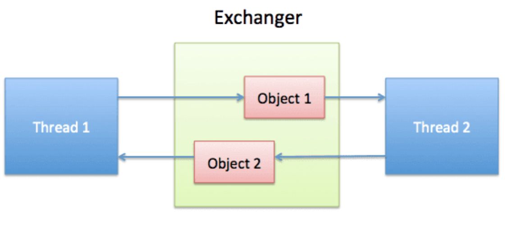
Thread1线程到达栅栏后，会首先观察有没其它线程已经到达栅栏，如果没有就会等待，如果已经有其它线程（Thread2）已经到达了，就会以成对的方式交换各自携带的信息，因此Exchanger非常适合用于两个线程之间的数据交换。
我们来看一个示例，理解下Exchanger的功能：
示例：假设现在有1个生产者，1个消费者，如果要实现生产者-消费者模式，一般的思路是利用队列作为一个消息队列，生产者不断生产消息，然后入队；消费者不断从消息队列中取消息进行消费。如果队列满了，生产者等待，如果队列空了，消费者等待。
我们来看下如何利用Exchanger实现生产者-消息者模式：
生产者：
public class Producer implements Runnable {
private final Exchanger<Message> exchanger;
public Producer(Exchanger<Message> exchanger) {
this.exchanger = exchanger;
}
@Override
public void run() {
Message message = new Message(null);
for (int i = 0; i < 3; i++) {
try {
Thread.sleep(1000);
message.setV(String.valueOf(i));
System.out.println(Thread.currentThread().getName() + ": 生产了数据[" + i + "]");
message = exchanger.exchange(message);
System.out.println(Thread.currentThread().getName() + ": 交换得到数据[" + String.valueOf(message.getV()) + "]");
} catch (InterruptedException e) {
e.printStackTrace();
}
}
}
}
消费者：
public class Consumer implements Runnable {
private final Exchanger<Message> exchanger;
public Consumer(Exchanger<Message> exchanger) {
this.exchanger = exchanger;
}
@Override
public void run() {
Message msg = new Message(null);
while (true) {
try {
Thread.sleep(1000);
msg = exchanger.exchange(msg);
System.out.println(Thread.currentThread().getName() + ": 消费了数据[" + msg.getV() + "]");
msg.setV(null);
} catch (InterruptedException e) {
e.printStackTrace();
}
}
}
}
Main：
public class Main {
public static void main(String[] args) {
Exchanger<Message> exchanger = new Exchanger<>();
Thread t1 = new Thread(new Consumer(exchanger), "消费者-t1");
Thread t2 = new Thread(new Producer(exchanger), "生产者-t2");
t1.start();
t2.start();
}
}
输出：
生产者-t2: 生产了数据[0]
生产者-t2: 交换得到数据[null]
消费者-t1: 消费了数据[0]
生产者-t2: 生产了数据[1]
消费者-t1: 消费了数据[1]
生产者-t2: 交换得到数据[null]
生产者-t2: 生产了数据[2]
消费者-t1: 消费了数据[2]
生产者-t2: 交换得到数据[null]
上述示例中，生产者生产了3个数据：0、1、2。通过Exchanger与消费者进行交换。可以看到，消费者消费完后会将空的Message交换给生产者。
我们先来看下Exchanger的构造，Exchanger只有一个空构造器：
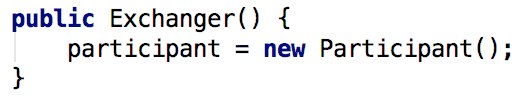
构造时，内部创建了一个Participant对象，Participant是Exchanger的一个内部类，本质就是一个ThreadLocal，用来保存线程本地变量Node：
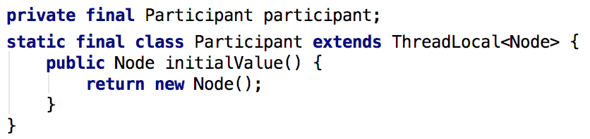
我们可以把Node对象理解成每个线程自身携带的交换数据，：
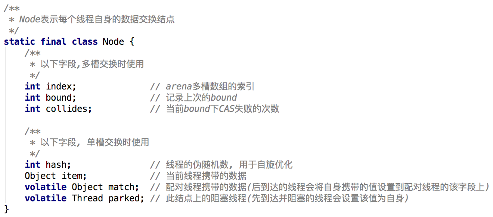
Exchanger有两种数据交换的方式，当并发量低的时候，内部采用“单槽位交换”；并发量高的时候会采用“多槽位交换”。
我们先来看下exchange方法：
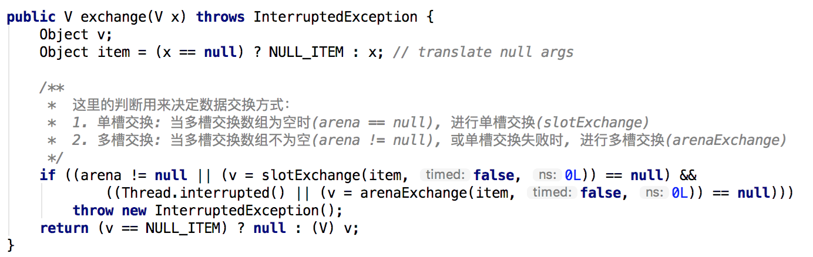
可以看到exchange其实就是一个用于判断数据交换方式的方法，它的内部会根据Exchanger的某些字段状态来判断当前应该采用单槽交换（slotExchange）还是多槽交换（arenaExchange），整个判断的流程图如下：
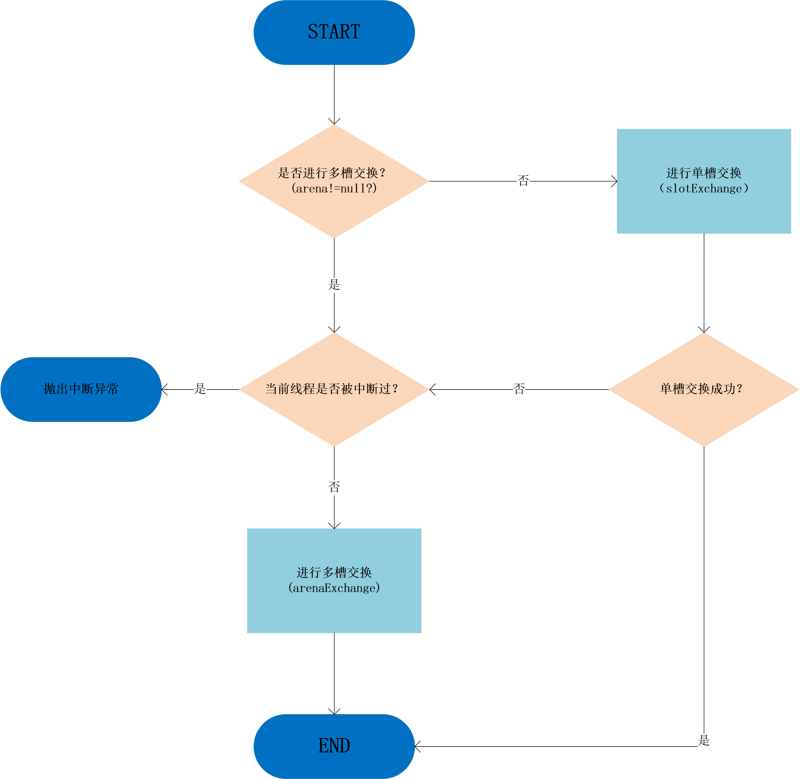
Exchanger的arena字段是一个Node类型的数组，代表了一个槽数组，只在多槽交换时会用到。此外，Exchanger还有一个slot字段，表示单槽交换结点，只在单槽交换时使用。
slot字段最终会指向首个到达的线程的自身Node结点，表示线程占用了槽位。
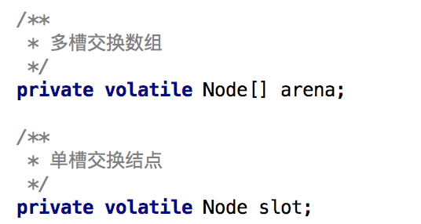
单槽交换示意图：
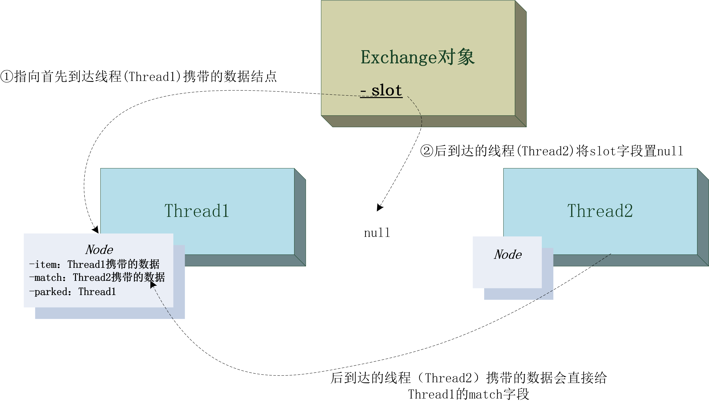
我们来看下Exchanger具体是如何实现单槽交换的，单槽交换方法slotExchange并不复杂，slotExchange的入参item表示当前线程携带的数据，返回值正常情况下为配对线程携带的数据：
/**
* 单槽交换
*
* @param item 待交换的数据
* @return 其它配对线程的数据; 如果多槽交换被激活或被中断返回null, 如果超时返回TIMED_OUT(一个Obejct对象)
*/
private final Object slotExchange(Object item, boolean timed, long ns) {
Node p = participant.get(); // 当前线程携带的交换结点
Thread t = Thread.currentThread();
if (t.isInterrupted()) // 线程的中断状态检查
return null;
for (Node q; ; ) {
if ((q = slot) != null) { // slot != null, 说明已经有线程先到并占用了slot
if (U.compareAndSwapObject(this, SLOT, q, null)) {
Object v = q.item; // 获取交换值
q.match = item; // 设置交换值
Thread w = q.parked;
if (w != null) // 唤醒在此槽位等待的线程
U.unpark(w);
return v; // 交换成功, 返回结果
}
// CPU核数数多于1个, 且bound为0时创建arena数组，并将bound设置为SEQ大小
if (NCPU > 1 && bound == 0 && U.compareAndSwapInt(this, BOUND, 0, SEQ))
arena = new Node[(FULL + 2) << ASHIFT];
} else if (arena != null) // slot == null && arena != null
// 单槽交换中途出现了初始化arena的操作，需要重新直接路由到多槽交换(arenaExchange)
return null;
else { // 当前线程先到, 则占用此slot
p.item = item;
if (U.compareAndSwapObject(this, SLOT, null, p)) // 将slot槽占用
break;
p.item = null; // CAS操作失败, 继续下一次自旋
}
}
// 执行到这, 说明当前线程先到达, 且已经占用了slot槽, 需要等待配对线程到达
int h = p.hash;
long end = timed ? System.nanoTime() + ns : 0L;
int spins = (NCPU > 1) ? SPINS : 1; // 自旋次数, 与CPU核数有关
Object v;
while ((v = p.match) == null) { // p.match == null表示配对的线程还未到达
if (spins > 0) { // 优化操作:自旋过程中随机释放CPU
h ^= h << 1;
h ^= h >>> 3;
h ^= h << 10;
if (h == 0)
h = SPINS | (int) t.getId();
else if (h < 0 && (--spins & ((SPINS >>> 1) - 1)) == 0)
Thread.yield();
} else if (slot != p) // 优化操作:配对线程已经到达, 但是还未完全准备好, 所以需要再自旋等待一会儿
spins = SPINS;
else if (!t.isInterrupted() && arena == null &&
(!timed || (ns = end - System.nanoTime()) > 0L)) { //已经自旋很久了, 还是等不到配对, 此时才阻塞当前线程
U.putObject(t, BLOCKER, this);
p.parked = t;
if (slot == p)
U.park(false, ns); // 阻塞当前线程
p.parked = null;
U.putObject(t, BLOCKER, null);
} else if (U.compareAndSwapObject(this, SLOT, p, null)) { // 超时或其他（取消）, 给其他线程腾出slot
v = timed && ns <= 0L && !t.isInterrupted() ? TIMED_OUT : null;
break;
}
}
U.putOrderedObject(p, MATCH, null);
p.item = null;
p.hash = h;
return v;
}
上述代码的整个流程大致如下：
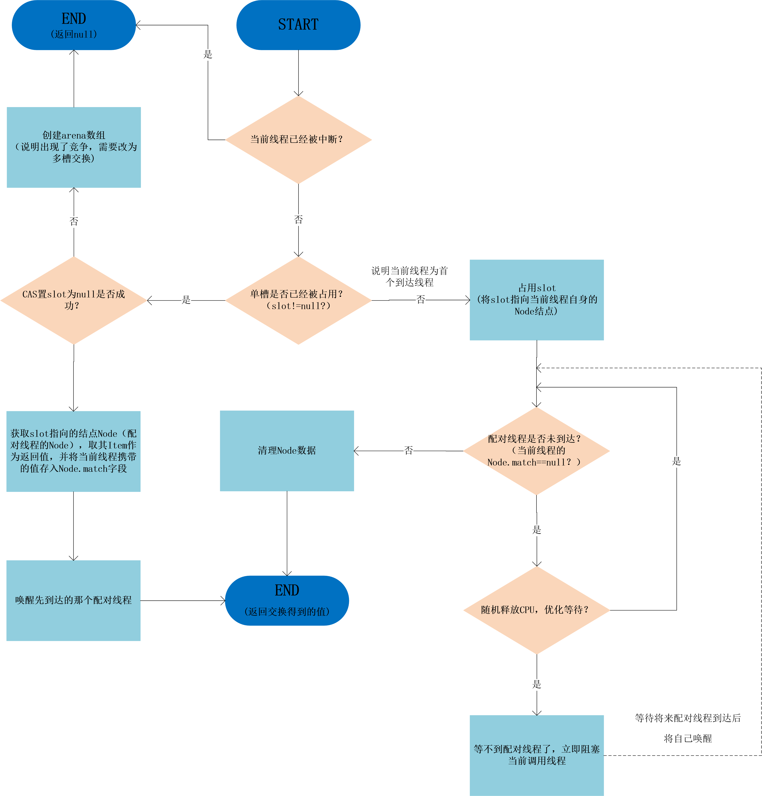
首先到达的线程：
稍后到达的配对线程：
如果当前线程（配对线程）不是首个到达的线程，则到达时槽（slot）已经被占用，此时slot指向首个到达线程自身的Node结点。配对线程会将slot置空，并取Node中的item作为交换得到的数据返回，另外，配对线程会把自身携带的数据存入Node的match字段中，并唤醒Node.parked所指向的线程（也就是先到达的线程）。
首先到达的线程被唤醒：
线程被唤醒后，由于match不为空（存放了配对线程携带过来的数据），所以会退出自旋，然后将match对应的值返回。
这样，线程A和线程B就实现了数据交换，整个过程都没有用到同步操作。
Exchanger最复杂的地方就是它的多槽位交换（arenaExchange），我们先看下，什么时候会触发多槽位交换？
我们之前说了，并发量大的时候会触发多槽交换，这个说法并不准确。
单槽交换（slotExchange）中有这样一段代码：
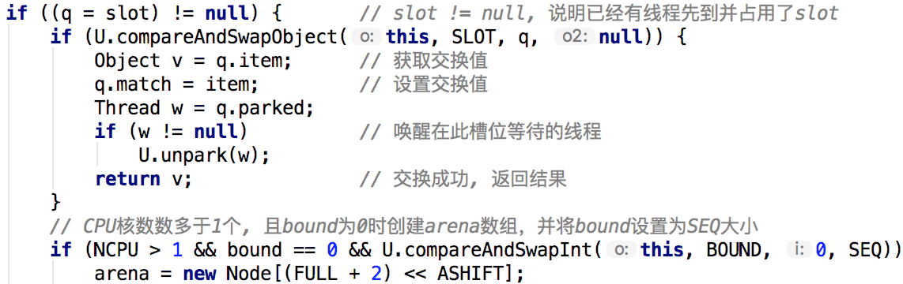
也就是说，如果在单槽交换中，同时出现了多个配对线程竞争修改slot槽位，导致某个线程CAS修改slot失败时，就会初始化arena多槽数组，后续所有的交换都会走arenaExchange：
/**
* 多槽交换
*
* @param item 待交换的数据
* @return 其它配对线程的数据; 如果被中断返回null, 如果超时返回TIMED_OUT(一个Obejct对象)
*/
private final Object arenaExchange(Object item, boolean timed, long ns) {
Node[] a = arena;
Node p = participant.get(); // 当前线程携带的交换结点
for (int i = p.index; ; ) { // 当前线程的arena索引
int b, m, c;
long j;
// 从arena数组中选出偏移地址为(i << ASHIFT) + ABASE的元素, 即真正可用的Node
Node q = (Node) U.getObjectVolatile(a, j = (i << ASHIFT) + ABASE);
if (q != null && U.compareAndSwapObject(a, j, q, null)) { // CASE1: 槽不为空，说明已经有线程到达并在等待了
Object v = q.item; // 获取已经到达的线程所携带的值
q.match = item; // 把当前线程携带的值交换给已经到达的线程
Thread w = q.parked; // q.parked指向已经到达的线程
if (w != null)
U.unpark(w); // 唤醒已经到达的线程
return v;
} else if (i <= (m = (b = bound) & MMASK) && q == null) { // CASE2: 有效槽位位置且槽位为空
p.item = item;
if (U.compareAndSwapObject(a, j, null, p)) { // 占用该槽位, 成功
long end = (timed && m == 0) ? System.nanoTime() + ns : 0L;
Thread t = Thread.currentThread();
for (int h = p.hash, spins = SPINS; ; ) { // 自旋等待一段时间,看看有没其它配对线程到达该槽位
Object v = p.match;
if (v != null) { // 有配对线程到达了该槽位
U.putOrderedObject(p, MATCH, null);
p.item = null;
p.hash = h;
return v; // 返回配对线程交换过来的值
} else if (spins > 0) {
h ^= h << 1;
h ^= h >>> 3;
h ^= h << 10;
if (h == 0) // initialize hash
h = SPINS | (int) t.getId();
else if (h < 0 && // approx 50% true
(--spins & ((SPINS >>> 1) - 1)) == 0)
Thread.yield(); // 每一次等待有两次让出CPU的时机
} else if (U.getObjectVolatile(a, j) != p) // 优化操作:配对线程已经到达, 但是还未完全准备好, 所以需要再自旋等待一会儿
spins = SPINS;
else if (!t.isInterrupted() && m == 0 &&
(!timed || (ns = end - System.nanoTime()) > 0L)) { // 等不到配对线程了, 阻塞当前线程
U.putObject(t, BLOCKER, this);
p.parked = t; // 在结点引用当前线程，以便配对线程到达后唤醒我
if (U.getObjectVolatile(a, j) == p)
U.park(false, ns);
p.parked = null;
U.putObject(t, BLOCKER, null);
} else if (U.getObjectVolatile(a, j) == p &&
U.compareAndSwapObject(a, j, p, null)) { // 尝试缩减arena槽数组的大小
if (m != 0) // try to shrink
U.compareAndSwapInt(this, BOUND, b, b + SEQ - 1);
p.item = null;
p.hash = h;
i = p.index >>>= 1; // descend
if (Thread.interrupted())
return null;
if (timed && m == 0 && ns <= 0L)
return TIMED_OUT;
break; // expired; restart
}
}
} else // 占用槽位失败
p.item = null;
} else { // CASE3: 无效槽位位置, 需要扩容
if (p.bound != b) {
p.bound = b;
p.collides = 0;
i = (i != m || m == 0) ? m : m - 1;
} else if ((c = p.collides) < m || m == FULL ||
!U.compareAndSwapInt(this, BOUND, b, b + SEQ + 1)) {
p.collides = c + 1;
i = (i == 0) ? m : i - 1; // cyclically traverse
} else
i = m + 1; // grow
p.index = i;
}
}
}
/**
* 单槽交换
*
* @param item 待交换的数据
* @return 其它配对线程的数据; 如果多槽交换被激活或被中断返回null, 如果超时返回TIMED_OUT(一个Obejct对象)
*/
private final Object slotExchange(Object item, boolean timed, long ns) {
Node p = participant.get(); // 当前线程携带的交换结点
Thread t = Thread.currentThread();
if (t.isInterrupted()) // 线程的中断状态检查
return null;
for (Node q; ; ) {
if ((q = slot) != null) { // slot != null, 说明已经有线程先到并占用了slot
if (U.compareAndSwapObject(this, SLOT, q, null)) {
Object v = q.item; // 获取交换值
q.match = item; // 设置交换值
Thread w = q.parked;
if (w != null) // 唤醒在此槽位等待的线程
U.unpark(w);
return v; // 交换成功, 返回结果
}
// CPU核数数多于1个, 且bound为0时创建arena数组，并将bound设置为SEQ大小
if (NCPU > 1 && bound == 0 && U.compareAndSwapInt(this, BOUND, 0, SEQ))
arena = new Node[(FULL + 2) << ASHIFT];
} else if (arena != null) // slot == null && arena != null
// 单槽交换中途出现了初始化arena的操作，需要重新直接路由到多槽交换(arenaExchange)
return null;
else { // 当前线程先到, 则占用此slot
p.item = item;
if (U.compareAndSwapObject(this, SLOT, null, p)) // 将slot槽占用
break;
p.item = null; // CAS操作失败, 继续下一次自旋
}
}
// 执行到这, 说明当前线程先到达, 且已经占用了slot槽, 需要等待配对线程到达
int h = p.hash;
long end = timed ? System.nanoTime() + ns : 0L;
int spins = (NCPU > 1) ? SPINS : 1; // 自旋次数, 与CPU核数有关
Object v;
while ((v = p.match) == null) { // p.match == null表示配对的线程还未到达
if (spins > 0) { // 优化操作:自旋过程中随机释放CPU
h ^= h << 1;
h ^= h >>> 3;
h ^= h << 10;
if (h == 0)
h = SPINS | (int) t.getId();
else if (h < 0 && (--spins & ((SPINS >>> 1) - 1)) == 0)
Thread.yield();
} else if (slot != p) // 优化操作:配对线程已经到达, 但是还未完全准备好, 所以需要再自旋等待一会儿
spins = SPINS;
else if (!t.isInterrupted() && arena == null &&
(!timed || (ns = end - System.nanoTime()) > 0L)) { //已经自旋很久了, 还是等不到配对, 此时才阻塞当前线程
U.putObject(t, BLOCKER, this);
p.parked = t;
if (slot == p)
U.park(false, ns); // 阻塞当前线程
p.parked = null;
U.putObject(t, BLOCKER, null);
} else if (U.compareAndSwapObject(this, SLOT, p, null)) { // 超时或其他（取消）, 给其他线程腾出slot
v = timed && ns <= 0L && !t.isInterrupted() ? TIMED_OUT : null;
break;
}
}
U.putOrderedObject(p, MATCH, null);
p.item = null;
p.hash = h;
return v;
}
多槽交换方法arenaExchange的整体流程和slotExchange类似，主要区别在于它会根据当前线程的数据携带结点Node中的index字段计算出命中的槽位。
如果槽位被占用，说明已经有线程先到了，之后的处理和slotExchange一样；
如果槽位有效且为null，说明当前线程是先到的，就占用槽位，然后按照：spin->yield->block这种锁升级的顺序进行优化的等待，等不到配对线程就会进入阻塞。
另外，由于arenaExchange利用了槽数组，所以涉及到槽数组的扩容和缩减问题，读者可以自己去研读源码。
其次，在定位arena数组的有效槽位时，需要考虑缓存行的影响。由于高速缓存与内存之间是以缓存行为单位交换数据的，根据局部性原理，相邻地址空间的数据会被加载到高速缓存的同一个数据块上（缓存行），而数组是连续的（逻辑，涉及到虚拟内存）内存地址空间，因此，多个slot会被加载到同一个缓存行上，当一个slot改变时，会导致这个slot所在的缓存行上所有的数据（包括其他的slot）无效，需要从内存重新加载，影响性能。
需要注意的是，由于不同的JDK版本，同步工具类内部的实现细节千差万别，所以最关键的还是理解它的设计思想。Exchanger的设计思想和LongAdder有些类似，都是通过
无锁+分散热点的方式提升性能，但是个人感觉JDK1.8中的Exchanger实现更为复杂，特别是其中的多槽交换，还涉及了缓存行相关的东西。
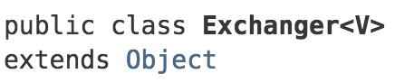
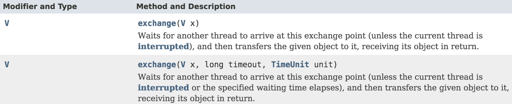